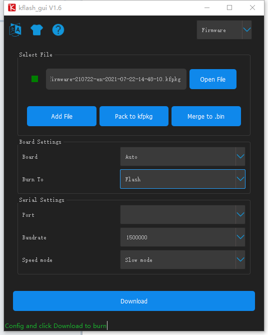

Catalogue
How to burn K210 firmware
Detailed list
- XGO-Mini K210 robot dog
- a windows computer
- A data cable connecting the computer and the robot dog
Steps
Download kflash
Connect the dog and update the firmware
1. Open the software, the following window will pop up 
2. Select the .kfpkg file (cocorobo-ai-module_firmware.kfpkg)
File download address English kfpkg
- Connect the computer and the dog, the port will be filled in automatically
4. Start the download and wait for the download to succeed (keep the connection between the computer and the dog stable)
- After completion, the version date will changed as the file name of kfpkg.
How to update SD card file
Turn off the module and pull out the screen module, take out the SD card from the SD card slot, and read the SD card file on the computer through the SD card reader. The general directory is as follows. Fill in the content, the directory structure remains unchanged, SD card English file download